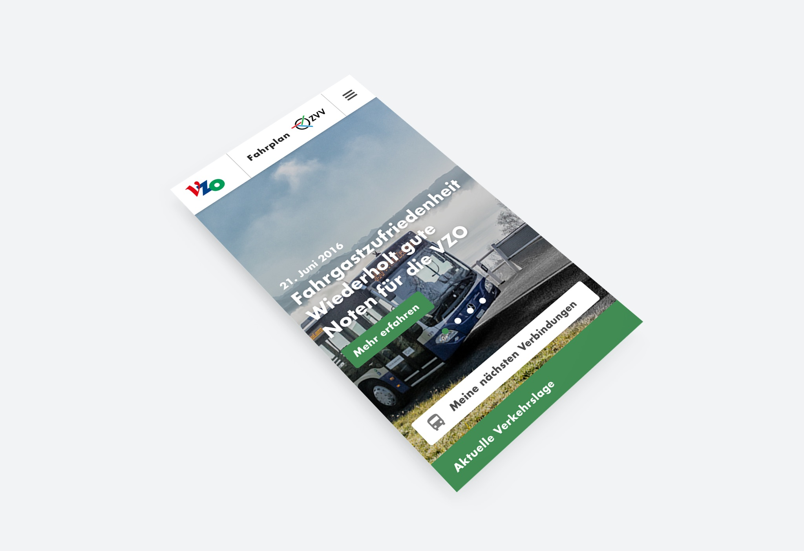

Redesign der Website der Verkehrsbetriebe Zürichsee und Oberland AG
Als Partner im Zürcher Verkehrsverbund ZVV sind die VZO verantwortlich für den öffentlichen Verkehr auf den rund 250 Quadratkilometern des Zürcher Oberlandes, des rechten Zürichseeufers und Rapperswil-Jonas.
Das plakative Design in den Farben des Verkehrsbetriebes vermittelt spannende Zahlen und Fakten rund um die VZO. Die Bildsprache gibt hierzu authentische Einblicke in das sympatische Unternehmen. Der Webauftritt der VZO gewann beim «Best of Swiss Web 2017» Silber in der Kategorie «Mobile».
Leistungen
Visual und Interaction Design
Responsive Design
Feinkonzept
Visuelle QA